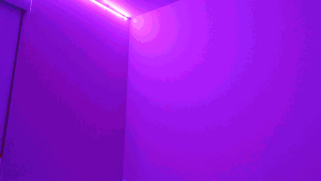
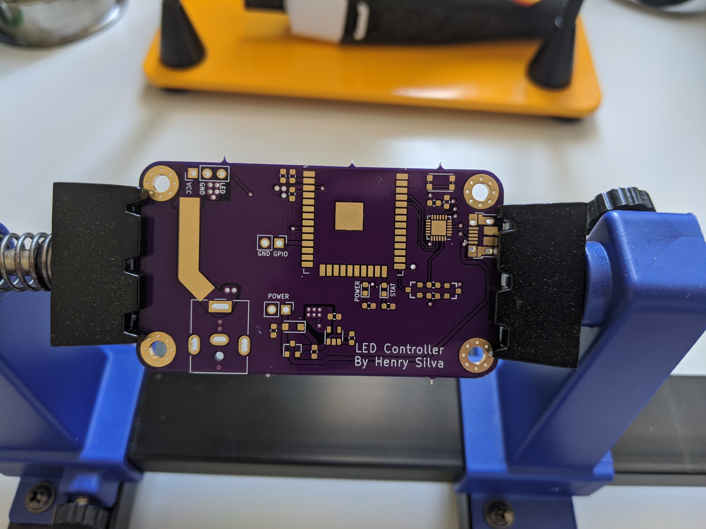
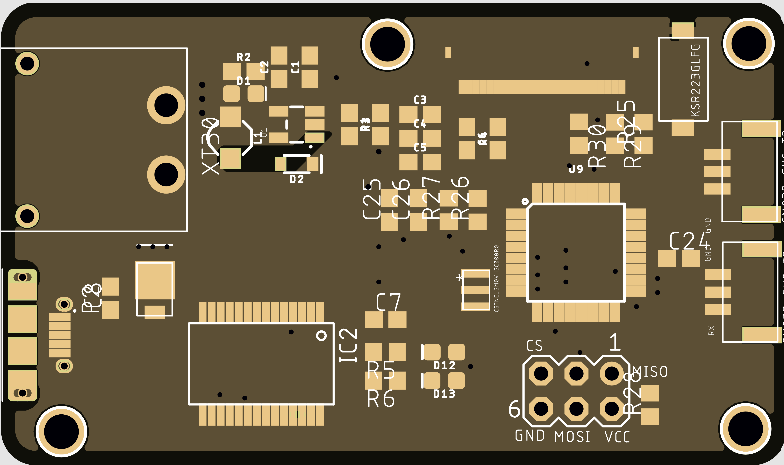
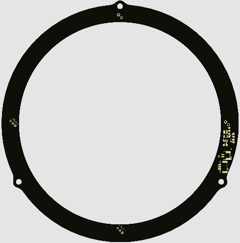
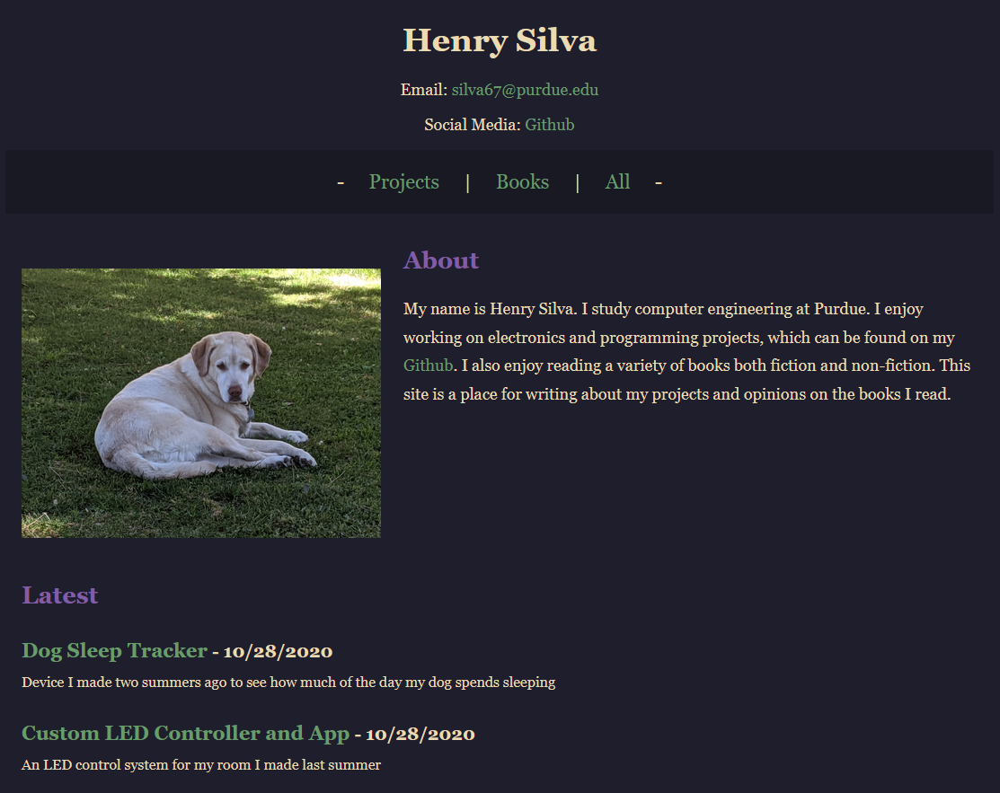
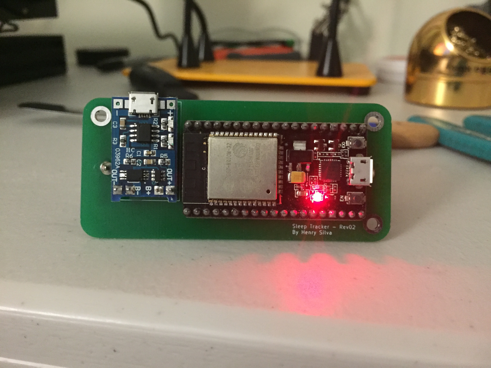

Henry Silva's Project Portfolio
This is my project portfolio page showcasing a few of the projects that I have worked on. Most of the projects here focus on embedded systems. The rest of my projects can be found on my Github.
Custom LED Controller and App

I made a LED controller to control a strip of over 300 neopixel LEDs to light my room. The controller is based on an ESP32 running FreeRTOS to control the LEDs and maintain a bluetooth connection at the same time. I wrote the ESP32 firmware in C++ using the Arduino IDE. Patterns are created and uploaded to the controller via an Android app developed using Android Studio in Java.

I also made a custom PCB for the controller using KiCAD. I then ordered and assembled the PCB using a hot air station. The code for the ESP32 and Android app can be found here on Github.
Robot Driver HUD and Ammo Detector

One of the first projects that I was placed on while on Purdue's Robomaster Team was to create a OLED HUD System for the robot driver. The HUD notified the driver of obstacles on all four sides of the robot and if the robot's ammo was low. The system used 6 time of flight sensors placed on the chassis to detect walls or other objects that are close.

The main OLED control board interfaced with an ammo detection board placed in the robot's ammo hopper. The ammo detection board used an infrared diode and sensor to determine the ammo level. The small OLED screen would be placed in front of the robot's camera to display the info to the driver. The project journal and files can be found on this github repository.
Website Updater Scripts

I wrote shell scripts to automatically post content to my website henrysilva.xyz. I write posts in a simple text file on my laptop and the post is automatically transferred and formatted to be displayed on the site. The projects on this page can also be found on my website here. The scripts can be found here on my Github.
Dog Sleep Tracker

I was interested to see how much my dog sleeps in a day. I used an ESP32 with an accelorometer to track movement and send the data via wifi. I used Node-RED on a Raspberry Pi to transfer the accelorometer data from the tracker device. The data was then displayed using a Grafana dashboard that allowed me to view the data from a web browser. I made a custom PCB in order to fit all the electronics in a small form factor. I 3D printed a case to allow for attachment of the device to a dog's collar. The code for this project can be found here on my Github.